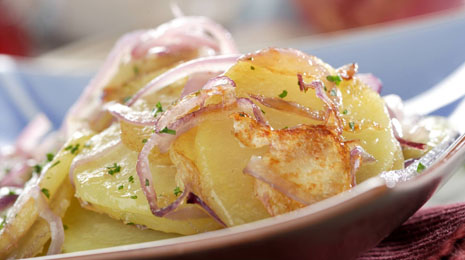

Welcome to Recetas de comida rapida
50 recetas de comidas RAPIDAS y FACILES de hacer
2021.12.16 15:47Menu recetas con POLLO Recetas de pollo para hacer con niños recetas de ALITAS DE POLLO recetas de PECHUGA DE POLLO recetas de POLLO AL HORNO recetas de POLLO EN SALSA recetas de POLLO FRITO recetas de ALITAS DE POLLO FRITAS recetas de POLLO GUISADO RECETAS caseras de Por ingredientes recetas de CARNES recetas de PESCADO recetas CON QUESO recetas con ARROZ recetas de HUEVO recetas de PATATAS recetas de VERDURAS RECETAS DE CALABAZA RECETAS DE BERENJENAS RECETAS CON CALABACÍN RECETAS CON ESPINACAS RECETAS DE ALCACHOFAS RECETAS CON BRÓCOLI RECETAS DE COLIFLOR recetas de SOPAS Y CREMAS RECETAS DE CREMAS DE VERDURAS RECETAS DE SOPAS RECETAS DE BEBIDAS CASERAS RECETAS DE POSTRES CASEROS FACILES Y RAPIDOS TARTAS SIN HORNO POSTRES SIN HORNO RECETAS DE BIZCOCHOS TARTAS DE CHOCOLATE TARTAS FÁCILES DE HACER EN CASA POSTRES CON HORNO recetas de PASTA recetas de LEGUMBRES recetas de ENSALADAS recetas de SALSAS recetas de PIZZAS Y PANES TRUCOS DE COCINA ESTILO DE VIDA RECETAS ESPECIALES RECETAS DE COMIDAS FACILES RAPIDAS Y RICAS DE HACER RECETAS PARA RECETAS VEGETARIANAS Recetas para EMBARAZADAS Recetas para llevar al trabajo RECETAS VEGANAS Recetas SIN CARNE Recetas SIN LACTOSA Recetas SIN GLUTEN recetas para CONGELAR Recetas de COCINA PARA NIÑOS Desayunos para niños Comidas para niños Meriendas para niños Cenas para niños 20 RECETAS DE COCINA PARA PRINCIPIANTES FACILES Y RAPIDAS MOMENTOS DEL DIA Desayunos Almuerzos Comidas Meriendas Cenas APERITIVOS FACILES Y RAPIDOS TAPAS Y PINCHOS PARA BARES Recetas FITNESS faciles Recetas SIN GRASA Recetas CON FIBRA Recetas LIGHT Recetas SANAS Recetas BAJAS EN CALORIAS 15 RECETAS SALUDABLES para comer y cenar POR FESTIVIDAD RECETAS DE NAVIDAD Recetas destacadas PAVO RELLENO AL HORNO DE NAVIDAD LECHAZO ASADO AL HORNO ELECTRICO PALETILLA DE CORDERO AL HORNO CON PATATAS LOMO AL HORNO JUGOSO Y TIERNO COCHINILLO ASADO AL HORNO PECHUGAS DE POLLO RELLENAS AL HORNO ROSCON DE REYES RECETA APERITIVOS DE NAVIDAD FACILES Y RAPIDOS POSTRES DE NAVIDAD FACILES Y RAPIDOS RECETAS PARA NOCHEBUENA FACILES Y RAPIDAS RECETAS PARA NOCHEVIEJA FACILES Y RAPIDAS RECETAS DE VERANO RECETAS DE HALLOWEEN RECETAS DE COCINA INTERNACIONAL Comida CHINA Comida MEXICANA Comida ITALIANA TODAS las Recetas SOBRE GORKA BARREDO recetas con POLLO Recetas de pollo para hacer con niños recetas de ALITAS DE POLLO recetas de PECHUGA DE POLLO recetas de POLLO AL HORNO recetas de POLLO EN SALSA recetas de POLLO FRITO recetas de ALITAS DE POLLO FRITAS recetas de POLLO GUISADO RECETAS caseras de Por ingredientes recetas de CARNES recetas de PESCADO recetas CON QUESO recetas con ARROZ recetas de HUEVO recetas de PATATAS recetas de VERDURAS RECETAS DE CALABAZA RECETAS DE BERENJENAS RECETAS CON CALABACÍN RECETAS CON ESPINACAS RECETAS DE ALCACHOFAS RECETAS CON BRÓCOLI RECETAS DE COLIFLOR recetas de SOPAS Y CREMAS RECETAS DE CREMAS DE VERDURAS RECETAS DE SOPAS RECETAS DE BEBIDAS CASERAS RECETAS DE POSTRES CASEROS FACILES Y RAPIDOS TARTAS SIN HORNO POSTRES SIN HORNO RECETAS DE BIZCOCHOS TARTAS DE CHOCOLATE TARTAS FÁCILES DE HACER EN CASA POSTRES CON HORNO recetas de PASTA recetas de LEGUMBRES recetas de ENSALADAS recetas de SALSAS recetas de PIZZAS Y PANES TRUCOS DE COCINA ESTILO DE VIDA RECETAS ESPECIALES RECETAS DE COMIDAS FACILES RAPIDAS Y RICAS DE HACER RECETAS PARA RECETAS VEGETARIANAS Recetas para EMBARAZADAS Recetas para llevar al trabajo RECETAS VEGANAS Recetas SIN CARNE Recetas SIN LACTOSA Recetas SIN GLUTEN recetas para CONGELAR Recetas de COCINA PARA NIÑOS Desayunos para niños Comidas para niños Meriendas para niños Cenas para niños 20 RECETAS DE COCINA PARA PRINCIPIANTES FACILES Y RAPIDAS MOMENTOS DEL DIA Desayunos Almuerzos Comidas Meriendas Cenas APERITIVOS FACILES Y RAPIDOS TAPAS Y PINCHOS PARA BARES Recetas FITNESS faciles Recetas SIN GRASA Recetas CON FIBRA Recetas LIGHT Recetas SANAS Recetas BAJAS EN CALORIAS 15 RECETAS SALUDABLES para comer y cenar POR FESTIVIDAD RECETAS DE NAVIDAD Recetas destacadas PAVO RELLENO AL HORNO DE NAVIDAD LECHAZO ASADO AL HORNO ELECTRICO PALETILLA DE CORDERO AL HORNO CON PATATAS LOMO AL HORNO JUGOSO Y TIERNO COCHINILLO ASADO AL HORNO PECHUGAS DE POLLO RELLENAS AL HORNO ROSCON DE REYES RECETA APERITIVOS DE NAVIDAD FACILES Y RAPIDOS POSTRES DE NAVIDAD FACILES Y RAPIDOS RECETAS PARA NOCHEBUENA FACILES Y RAPIDAS RECETAS PARA NOCHEVIEJA FACILES Y RAPIDAS RECETAS DE VERANO RECETAS DE HALLOWEEN RECETAS DE COCINA INTERNACIONAL Comida CHINA Comida MEXICANA Comida ITALIANA TODAS las Recetas SOBRE GORKA BARREDO
Cocina Casera » RECETAS ESPECIALES » RECETAS DE COMIDAS FACILES RAPIDAS Y RICAS DE HACER
RECETAS DE COMIDAS FACILES RAPIDAS Y RICAS DE HACER
Comidas faciles, rapidas y ricas de hacer : por Verónica Redondo
COMIDAS FACILES DE HACER EN CASA
Cuando pensamos qué podemos hacer para comer hoy o para cenar, en muchas ocasiones se nos presenta un dilema. Hay días que no te apetece cocinar y buscas comidas fáciles de hacer . Otros, dispones de poco tiempo para comer y necesitas comidas rápidas de hacer y que te lleve poco tiempo en la cocina. Además, hay meses que nos surgen imprevistos y necesitamos elaborar comidas económicas . Eso si, siempre, buscas ideas para cocinar comidas ricas o deliciosas que gusten a toda la familia.
En la actualidad, estamos viviendo en una sociedad que está en constante cambio. Si hace unos años hablábamos de que pasábamos mucho tiempo fuera de casa, a causa del trabajo o por otros motivos, ahora estamos mucho más tiempo en casa, pero aún así, seguimos teniendo un horario muy «ajustado» que no nos permite pasar mucho tiempo en la cocina.
Como bien sabes, en Cocina Casera y Fácil tenemos presente todo esto y por ello, hemos elaborado para tí una selección de nuestras mejores 50 recetas de comidas fáciles, rápidas y ricas para hacer en casa. Un listado de aperitivos, entrantes y postres perfectos para ayudarte a elaborar tu menú diario y con el que disfrutará toda la familia, desde los mas pequeños de la casa, hasta los más mayores.
LAS 50 MEJORES RECETAS DE COMIDAS CASERAS RAPIDAS Y FACILES DE HACER
El chef vitoriano Gorka Barredo , nos propone una selección de recetas que te van a ayudar en tu día a día. Olvídate de la clásica pregunta « ¿Que hacemos para comer hoy? «. Aquí podrás encontrar recetas rápidas , porque en cuestión de 30 minutos, o menos, las tendremos listas. Fáciles de hacer , hasta el cocinero más novato es capaz de hacerlas en casa y ricas , porque ¡están deliciosas! A continuación, te presento su listado de ideas de comidas faciles rapidas y ricas de hacer .
POLLO AL HORNO CON PATATAS
Pollo al horno con patatas: por Gorka Barredo POLLO ASADO AL HORNO RECETA FACIL Me encanta esta receta de pollo al horno con patatas y cebolla. Al igual que
Leer másPOLLO A LA NARANJA RECETA CHINA
Pollo a la Naranja receta china: por Gorka Barredo RECETA DE POLLO A LA NARANJA El pollo a la naranja es una comida típica de Asia. No tiene nada
Leer másBIZCOCHO DE LECHE ESPONJOSO CASERO
RECETA DEL BIZCOCHO DE LECHE ESPONJOSO CASERO Un delicioso bizcocho de leche esponjoso casero, ideal para comer tal cual, con mermelada o para mojar en leche. INGREDIENTES:
Leer másTACOS MEXICANOS receta original
RECETA DE LOS TACOS MEXICANOS Los tacos mexicanos son una popular receta de este país americano. Consiste en carne, generalmente de ternera (o res como lo llaman allí) o
Leer másPOLLO AL HORNO CON VERDURAS
RECETA DEL POLLO AL HORNO ASADO CON VERDURAS Pollo al horno con verduras. Otra forma más de preparar esta popular carne. Pollo asado. Además es una opción muy saludable,
Leer másESPAGUETIS CARBONARA RECETA TRADICIONAL
RECETA DE LOS ESPAGUETIS CARBONARA SIN NATA Los espaguetis a la carbonara es probablemente la forma más internacional de preparar esta pasta. La auténtica salsa carbonara de italia contiene
Leer másPOLLO FRITO CRUJIENTE receta
Pollo frito crujiente: por Gorka Barredo RECETA DEL POLLO FRITO CRUJIENTE ¿Cómo hacer un pollo frito crujiente y riquísimo? Muy fácilmente. Aquí, vamos a preparar un pollo frito crujiente
Leer másBANDERILLAS DE SALCHICHA O CORNDOGS
RECETAS DE LAS BANDERILLAS DE SALCHICHA O CORN DOGS Las banderillas de salchicha o corndogs, es una receta típicamente estadounidense. Consiste en una salchicha frankfurt, pinchada con una brocheta
Leer másPOLLO A LA CERVEZA receta
RECETA DEL POLLO A LA CERVEZA GUISADO Pollo a la cerveza guisado. Una receta con mucha personalidad. Es como el guisado convencional pero, utilizaremos cerveza como ingrediente principal de
Leer másMAYONESA CASERA SIN HUEVO
RECETA DE LA MAYONESA CASERA SIN HUEVO ¿Se puede hacer una mayonesa casera sin huevo? La respuesta es sí. Y además, tan sencilla de hacer como la mayonesa normal .
Leer másTORTILLA DE PATATA RELLENA DE QUESO Y JAMON
Tortilla de patatas rellena de queso y jamón: por Gorka Barredo RECETA DE LA TORTILLA DE PATATAS RELLENA DE QUESO Y JAMON La tortilla de patatas rellena de queso
Leer másGALLETAS DE MANTEQUILLA CASERAS
Galletas de mantequilla caseras: por Gorka Barredo RECETA DE GALLETAS DE MANTEQUILLA CASERAS FACILES DE HACER Las galletas de mantequilla caseras, son unas galletitas muy fáciles de hacer y con
Leer másFINGERS DEDOS O PALITOS DE QUESO
RECETA DE LOS DEDOS DE QUESO FACILES Los fingers, dedos o palitos de queso son un aperitivo muy conocido en el restaurante foster’s hollywood. Y por tanto, muy típico americano. Consiste
Leer másALIOLI CASERO SIN HUEVO receta
RECETA FACIL DEL AUTÉNTICO ALIOLI HECHO A MANO La autentica salsa Alioli, es una receta muy típica española. Existe una versión falsa de esta salsa que, es una especie
Leer másNUGGETS DE POLLO CASEROS FACILES
RECETA DE LOS NUGGETS DE POLLO CASEROS FACILES Los Nuggets de pollo caseros, son una especie de mini-hamburguesita de pollo empanada, originaria de Estados Unidos y de una textura
Leer másMACARRONES CON CARNE PICADA Y TOMATE
Macarrones con carne picada y tomate: por Gorka Barredo RECETA DE LOS MACARRONES CON CARNE PICADA Y TOMATE Macarrones con carne picada y tomate. Una forma muy fácil y
Leer másPOLLO FRITO ESTILO AMERICANO KENTUCKY
RECETA DEL POLLO FRITO ESTILO AMERICANO KFC ¿Has estado alguna vez en este restaurante de comida rápida? ¿Has probado alguna vez su plato estrella, el pollo frito estilo Kentucky
Leer másBOLITAS DE OREO receta
RECETA DE LAS BOLITAS DE OREO CON PHILADELPHIA Las bolitas de oreo son un espectacular postre hecho con esta famosa galleta, triturada y mezclada con queso philadelphia y finalmente bañada
Leer másMUSLOS DE POLLO ASADOS AL HORNO CON PATATAS
RECETA DE LOS MUSLOS DE POLLO ASADOS AL HORNO CON PATATAS Y CEBOLLA Muslos de pollo asados al horno con patatas. Una receta deliciosa, jugosa, sana y muy fácil
Leer másBOLAS DE ARROZ ITALIANAS RELLENAS
RECETAS DE LAS BOLAS DE ARROZ FRITAS RELLENAS Estas bolas de arroz rellenas, las probé hace poco cuando estuve por primera vez en una conocida pizzería de la ciudad
Leer másARROZ CON POLLO Y VERDURAS receta
RECETA FACIL DEL ARROZ CON POLLO Y VERDURAS El arroz con pollo y verduras, es una de las formas más populares de preparar este cereal. Y también más saludable .
Leer másSALMON A LA PLANCHA jugoso
RECETA DEL SALMON A LA PLANCHA JUGOSO El salmon a la plancha, es una manera muy fácil y sabrosa de preparar este delicioso pescado. Conserva todos sus aromas y sabores
Leer másPECHUGAS DE POLLO EN SALSA DE QUESO AZUL
Pechugas de pollo en salsa de queso azul: por Gorka Barredo RECETA DE LAS PECHUGAS EN SALSA DE QUESO AZUL Pechugas de pollo en salsa de queso. Otra idea
Leer másPOLLO GUISADO EN OLLA RAPIDA
RECETA DEL POLLO GUISADO EN OLLA A PRESIÓN Pollo guisado en olla rapida. Con esta receta express, vamos a reducir considerablemente los tiempos de cocción del pollo. Tendremos nuestro
Leer másPECHUGAS DE POLLO EN SALSA DE TOMATE
RECETA DE LAS PECHUGAS DE POLLO EN SALSA DE TOMATE Las pechugas de pollo en salsa de tomate es una receta muy fácil y rápida de hacer. Con pocos
Leer másALITAS DE POLLO BUFFALO WINGS receta
RECETA CASERA DE LAS ALITAS DE POLLO BUFFALO Las alitas de pollo buffalo wings es una receta de cocina típica estadounidense. Y como no, también típica del restaurante Foster’s
Leer másLENTEJAS CON VERDURAS receta
Lentejas con verduras: por Gorka Barredo RECETA DE LENTEJAS CON VERDURAS DE LA ABUELA Las lentejas con verduras es una de las recetas de cocina básica, más fácil, barata y
Leer másRECETA CASERA DEL BRAZO DE GITANO
RECETA DEL BRAZO GITANO DE NATA El brazo de gitano es un postre muy típico español que consiste en un fino bizcocho, que es enrollado sobre sí mismo, con
Leer másESPAGUETI A LA CREMA DE QUESO
RECETA DE LOS ESPAGUETIS EN SALSA DE QUESO Los espagueti a la crema de queso, es una receta para auténticos amantes de la pasta y el queso. ¿Y a
Leer másPECHUGAS DE POLLO RELLENAS DE JAMON Y QUESO
Pechugas de pollo rellenas de jamón y queso: por Gorka Barredo RECETA DE LAS PECHUGAS DE POLLO RELLENAS DE JAMON Y QUESO FRITAS Las pechugas de pollo rellenas de
Leer másCONEJO AL AJILLO receta
RECETA DEL CONEJO AL AJILLO EN SALSA El conejo al ajillo es una receta de cocina muy facil y rica de hacer. Para hacerlo, primero se fríe en aceite que
Leer másARROZ TRES DELICIAS CHINO receta original
Arroz tres delicias chino: por Gorka Barredo RECETA DEL ARROZ TRES DELICIAS CHINO El arroz tres delicias chino es un plato muy común en los restaurantes de comida china en
Leer másHAMBURGUESA CASERA receta
RECETA DE LAS HAMBURGUESAS CASERAS La hamburguesa casera es probablemente la receta más popular del mundo. Las hamburguesas no son más que un filete de carne picada, al que se le
Leer másSALSA CARBONARA CON NATA
RECETA DE LA SALSA CARBONARA CON NATA Salsa carbonara con nata. La auténtica salsa carbonara, es una salsa italiana que lleva yema de huevo. No obstante, en la mayoría de
Leer másPORRUSALDA VASCA receta
Porrusalda vasca: por Gorka Barredo RECETA CASERA DE LA PORRUSALDA VASCA Como buen vasco que soy, no puede faltar en mi recetario una de las mejores gastronomías del país .
Leer másESPAGUETIS EN SALSA PESTO CASERA receta
RECETA ITALIANA DE LOS ESPAGUETIS AL PESTO Los espaguetis al pesto, consisten en esta popular pasta, preparada con esta salsa de color verde. La albahaca, es el ingrediente que
Leer másESPAGUETIS CON SALSA DE QUESO POLLO Y BACON
RECETA FACIL DE LOS ESPAGUETIS CON QUESO POLLO Y BACON Espaguetis con salsa de queso y pollo. Tan fáciles, rápidos y deliciosos de hacer que no te creerás que
Leer másBOLITAS DE PATATA O PAPAS
Las bombas o bolitas de patata o papa. Una receta de cocina muy sencilla. Recuerdo que, cuando era pequeño, mi madre me traía unas bolitas de patata congeladas que, me sabían
Leer másCORDON BLEU DE POLLO RELLENO DE JAMÓN Y QUESO
El cordon bleu de pollo es una receta de pechuga enrollada y rellena de queso y jamón. Es muy fácil de hacer y está delicioso. Tan sólo necesitaremos un pequeño
Leer másMACARRONES CON TOMATE Y ATUN receta
RECETA DE LOS MACARRONES CON ATUN Y TOMATE En esta ocasión, Gorka Barredo nos propone unos macarrones con tomate y atun. Una receta muy recurrente y fácil de hacer .
Leer másSALCHICHAS ENVUELTAS EN PATATA
Estas salchichas envueltas en patata son un aperitivo excelente. Aunque algo delicadas a la hora de la fritura ya que, como todo lo que lleva masa de patata, tiende
Leer másPOLLO A LA CERVEZA ASADO AL HORNO
Pollo a la cerveza asado al horno: por Gorka Barredo RECETA DEL POLLO A LA CERVEZA AL HORNO Pollo a la cerveza al horno. Una receta con mucha personalidad .
Leer másAROS DE CEBOLLA receta facil
Aros de cebolla crujientes: por Gorka Barredo RECETA DE AROS DE CEBOLLA CASEROS CRUJIENTES Los aros de cebolla crujientes son una de las comidas fritas que más encantan a los más pequeños
Leer másBANDERILLAS DE SALCHICHA CON QUESO MUY FÁCILES DE PREPARAR
RECETA DE LAS BANDERILLAS DE SALCHICHA Y QUESO Hace poco, subí a esta web y al canal de youtube unos corn dogs o banderillas de salchicha convencionales. Y fue
Leer másPECHUGAS DE POLLO A LA BARBACOA
RECETA DE LAS PECHUGAS DE POLLO EN SALSA BARBACOA Puede que estas pechugas de pollo a la barbacoa no sean para comer todos los días. Ni siquiera todas las
Leer másPOLLO AL CURRY CON NATA
RECETA DEL POLLO AL CURRY CON NATA FACIL El pollo al curry con nata es una receta típica del sudeste asiático. Consiste en este ave hecha con las especias
Leer másALITAS DE POLLO AL AJILLO
Alitas de pollo al ajillo: por Gorka Barredo RECETA DE ALITAS DE POLLO AL AJILLO Las alitas de pollo al ajillo, es una receta típicamente española. Consiste en las
Leer másRECETA DE LOS MACARRONES CON BECHAMEL Y QUESO
RECETA DE LOS MACARRONES CON BECHAMEL Y QUESO Los macarrones con bechamel y queso, es una receta parecida a los macarrones con bechamel convencionales. Casi la única diferencia, es
Leer másSOPA DE CEBOLLA FRANCESA receta facil
RECETA DE LA SOPA DE CEBOLLA FRANCESA La sopa de cebolla, es una receta de cocina típicamente francesa. Es bastante facil de hacer y, como todo lo que suelen
Leer másCONEJO AL HORNO CON PATATAS
RECETA DEL CONEJO AL HORNO CON PATATAS PANADERAS Conejo al horno con patatas panaderas. El conejo es una carne sin apenas grasa, lo cual la convierte en una de las
Leer másDespués de ver estas 50 comidas fáciles, rápidas y ricas de hacer en casa , ¿has elegido la receta que vas a preparar para comer hoy? Como siempre, podrás preparar todas y cada una de estas recetas de una forma fácil y rápida si sigues todos los pasos que te proponemos. Unos platos pensados para elaborar en tu día a día, perfecta para toda la familia. Y ahora ¡manos a la obra!
Si te ha gustado nuestra selección de 50 comidas fáciles, rápidas y ricas de hacer , visita nuestra selección de recetas de pollo que tenemos preparada para ti. ¡hay más de 100 recetas!
class="total-comments"> 24 Comments maripuri 18/09/2021esta bueno el conejo 😉
Responder Cocinatics 19/08/2021Muy buenas recetas, ideas siempre van genial para poder inspirarse y cocinar en casa!
Responder nosehacerunhuevo 13/08/2021 No se ni hacer un huevo ahora voy a hacer eso
😉
habria que preguntarle al conejo.
Responder cecilia 20/04/2021muy buenas recetas
Responder Julieta 23/11/2020Que buena pinta y que rico debe estar todo!
Responder Fer 21/11/2020me encanta todo,esta noche le cocino a mi novia 😀
Responder milca 06/10/2021que tierno
Responder MAILEN 12/11/2020yo quería Aser algo pero tengo tanta suerte que a mi primo no le gusta el queso ..
Responder dario 09/11/2020Yo solo como topi
Responder junior 03/10/2020 me gustan casi todos excepto las lentejas, y se ve ricos los otros pero me da pereza
cocinarlo.
Me gustan las recetas, voy a sorprender a mis vecinos y amigos en Filipinas
Responder Pedro 01/05/2020 @la meme
No sabes apreciar la buena comida
Tienes razón «La meme» es verdad
Responder Daymar 09/10/2019 Para la edad que tengo me parece que estas recetas a pesar de parecer difíciles,no lo son.
Me encantaron y súper sencillo!.
Me encantan las recetas
Responder la meme 21/02/2019 algunas recetas ridículas, se supone dice, recetas fáciles y rápidas, pues deben ser cuando tienes prisa o tienes todos los ingredientes o por lo menos no es tan complico ir buscar al super todo, que ridículo.
recetas con vinos, con quesos especiales etc.
pésima pagina nada recomendable.
Date tiempo para buscar otras, estas equivocada en tu comentario
Responder maria 08/01/2020es veritat
Responder Mara 09/04/2019De la abundancia del corazón habla la boca Se puede hacer una crítica con mucho más gusto y educación .
Responder Magui Lara 20/10/2020Exacto! : )
Responder serafin 16/02/2019la receta del pollo en salsa la mejor
Responder Ariel Deccico 16/11/2018Muy ricas las recetas ..
Responder iviori 24/01/2019si
ResponderLeave a Reply Cancelar la respuesta
Este sitio usa Akismet para reducir el spam. Aprende cómo se procesan los datos de tus comentarios .
Sigue a Gorka Barredo:
RECETAS DE NAVIDAD 🎄
Pavo relleno al horno Lechazo asado al horno eléctrico Paletilla de cordero al horno con patatas Lomo al horno Cochinillo asado al horno Pechugas de pollo rellenas de jamón y queso Roscon de Reyes Galletas de jengibre
Aperitivos de Navidad
Postres de Navidad
Recetas para la cena de Nochebuena
Recetas para la cena de Nochevieja
Sugerencias de Gorka Barredo: El chef
Pollo al horno con patatas Tarta de queso sin horno Tarta de manzana Rabas de calamar Cordon bleu de pollo Pollo frito crujiente Aros de cebolla crujientes Arroz con leche Crema pastelera Berenjenas rellenas Espaguetis Carbonara Bizcocho de chocolate SUPER jugoso Salsa de tomate casera macarrones con carne Pollo a la cerveza Pollo guisado con verduras Ensalada cesar Cocer pulpo Espaguetis rojo con tomate Alubias blancas con verduras Galletas de mantequilla Garbanzos con espinacas Cocer arroz blanco Carrilleras de ternera al vino tinto Papas o patatas fritas crujientes
TODAS LAS RECETAS DE COCINA CASERA Y FÁCIL POR ORDEN ALFABÉTICO
Últimas recetas de Cocina Casera y Facil
PONCHE DE HUEVO GALLETAS DE JENGIBRE MANZANAS DE CARAMELO CODORNICES EN SALSA DE VINO TINTO ESTOFADO DE CERDO CON PATATAS LENGUADO A LA NARANJA ARROZ CON CHAMPIÑONES Y VERDURAS MUSLOS DE POLLO CON SALSA DE CHAMPIÑONES PIMIENTOS RELLENOS DE MARISCO BATIDO DE OREOCONTACTO Aviso legal y condiciones de uso Política de privacidad Política de Cookies
Recetas especiales
RECETAS MÁS BUSCADAS
Pollo al horno con patatas y cebolla Tacos mexicanos Pollo a la naranja Hamburguesas caseras Bizcocho esponjoso casero Bizcocho con 3 ingredientes Muslos de pollo asados al horno Pollo frito crujiente Pollo agridulce chino Recetas con calabacín Recetas y comidas vegetarianas Recetas de almuerzos rápidosRecetas de Cocina Casera y Fácil Copyright © 2021.
